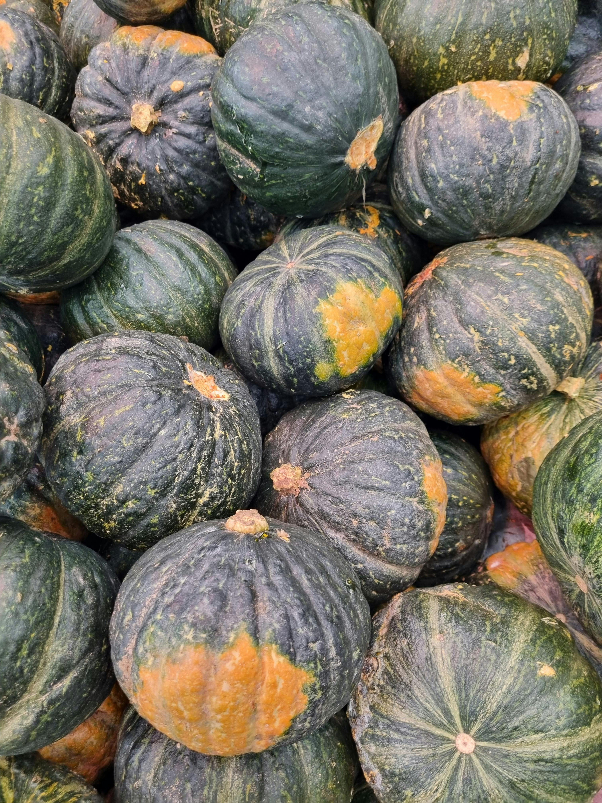

Kabocha
Origin
A type of Japanese pumpkin, is believed to have originated in Japan. Its name "kabocha" is derived from the Portuguese word "cabocha," which means "squash" or "pumpkin." The vegetable itself, however, was introduced to Japan by Portuguese traders in the 16th century.
Kabocha
Care
Most kabocha is harvested in summer and autumn, but turns sweeter in autumn and winter after a post-harvest ripening period.
- Direct Sunlight
- Well-drained, loamy soil rich in organic matter.
- Mix compost or well-rotted manure into the soil to provide nutrients.
You’ll know Kabocha is ready for harvest when the skins have changed from shiny to matte and have a toughened exterior.
More Research
Here are some articles that I got some of the above information/more research you can do on your own.